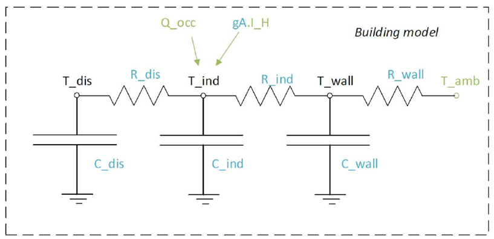
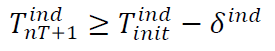
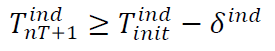

Advanced under-development features
Building model
A linear RC building model is presently under-development to replace the static space heating demand profiles. A building model is a grey-box model which is often used to depict the thermal behaviour of a building in a simplified manner. It is implemented as a custom sink component along with a set of new constraints.

The specific building model implemented in optihood was proposed and validated in [1] and is characterized by three thermal spaces:
wall and building mass
indoor air
distribution system
Each thermal space is at a certain temperature at a particular timestep. Moreover, each thermal space has two key parameters which represent the thermal resistance and thermal capacity. The temperature of each thermal space is influenced by the temperature of adjascent thermal spaces, heat flow, internal heat gains and ambient weather conditions.
{kind=link}
The parameters and variables of the RC model are described below:
Parameters |
|
\(R_{ind}\) |
Thermal resistance between indoor and wall states [K/kW] |
\(R_{wall}\) |
Thermal resistance between wall state and outside [K/kW] |
\(R_{dis}\) |
Thermal resistance between indoor and distribution system states [K/kW] |
\(C_{ind}\) |
Thermal capacity of the indoor air state [kWh/K] |
\(C_{wall}\) |
Thermal capacity of the wall state [kWh/K] |
\(C_{dis}\) |
Thermal capacity of the distribution system state [kWh/K] |
\(gA\) |
Aperture area of the windows [\(m^2\)] |
\(Q^{dis}_{min}\) |
Minimum operating power from the tank to the distribution system [kW] |
\(Q^{dis}_{max}\) |
Maximum operating power from the tank to the distribution system [kW] |
\(T^{ind}_{min}\) |
Indoor minimum comfort temperature [°C] |
\(T^{ind}_{max}\) |
Indoor maximum comfort temperature [°C] |
Exogenous input parameters |
|
\(T^{amb}_{t}\) |
Ambient outside air temperature at \(t^{th}\) timestep [°C] |
\(I^{H}_{t}\) |
Total horizontal irradiation at \(t^{th}\) timestep [kW/\(m^2\)] |
\(Q^{occ}_{t}\) |
Internal heat gains from occupants at \(t^{th}\) timestep [kW] |
Boundary parameters |
|
\(T^{ind}_{init}\) |
Indoor initial temperature [°C] |
\(T^{wall}_{init}\) |
Wall initial temperature [°C] |
\(T^{dis}_{init}\) |
Distribution system initial temperature [°C] |
State variables |
|
\(T^{ind}_t\) |
Indoor temperature at \(t^{th}\) timestep [°C] |
\(T^{wall}_t\) |
Wall temperature at \(t^{th}\) timestep [°C] |
\(T^{dis}_t\) |
Distribution system temperature at \(t^{th}\) timestep [°C] |
\(\epsilon^{ind}_t\) |
Violation of indoor comfort temperature range at \(t^{th}\) timestep [°C] |
\(\delta^{ind}_t\) |
Violation of indoor final temperature requirement [°C] |
\(P^{dis}_t\) |
Electric consumption of the distribution system |
Decision variable |
|
\(Q^{dis}_t\) |
Heating power from the tank to the distribution system at \(t^{th}\) timestep [kW] |
The state space equations of the building model are:

 

{kind=link}
{kind=link}
{kind=link}

Clustering
Clustering feature allows the users to improve the optimization speed by specifying a set of dates which could be considered representative of the whole year (or the entire duration of the analysis). For example: four typical days could be selected , one representing each season, and optihood would then provide the optimal design plan of the energy network based on these days. Since the time resolution of the optimization problem would be much lower than simulating the whole year, the speed of optimization is much faster when clustering is used.
Any clustering method (for example K-means clustering) can be chosen by the user and the results could be fed to optihood for faster optimization. Note that in optihood one could use the results from clustering (which is to be done independently) but the implementation of the clustering method itself is not a part of the optihood framework. The following results are required from the clustering algorithm:
Number of clusters
Days of year representing each cluster
Number of days in each cluster
In order to use the clustering feature, first a dictionary containing one item for each cluster, where keys and values are the cluster’s representative date and number of days, respectively, should be defined:
cluster = {"2018-07-30": 26,
"2018-02-03": 44,
"2018-07-23": 32,
"2018-09-18": 28,
"2018-04-15": 22,
"2018-10-01": 32,
"2018-11-04": 32,
"2018-10-11": 37,
"2018-01-24": 15,
"2018-08-18": 26,
"2018-05-28": 23,
"2018-02-06": 48}
Here, the days of the year have been represented using 12 clusters, where the first cluster consists of 26 days and is represented by the date 30 June 2018.
This dictionary should be passed in the setFromExcel and optimize functions of the EnergyNetwork class:
# set a time period for the optimization problem according to the number of clusers
network = EnergyNetwork(pd.date_range("2018-01-01 00:00:00", "2018-01-12 23:00:00", freq="60min"), temperatureSH, temperatureDHW)
# pass the dictionary defining the clusters to setFromExcel function
network.setFromExcel("scenario.xls", numberOfBuildings=4, clusterSize=cluster, opt="costs")
# pass the dictionary defining the clusters to optimize function
envImpact, capacitiesTransformers, capacitiesStorages = network.optimize(solver='gurobi', clusterSize=cluster)
Note that the time period would need to be adjusted to include the timesteps corresponding to 12 days (12 x 24 = 288 timesteps if hourly resolution is considered). Try the example on selective days clustering for a better grasp.